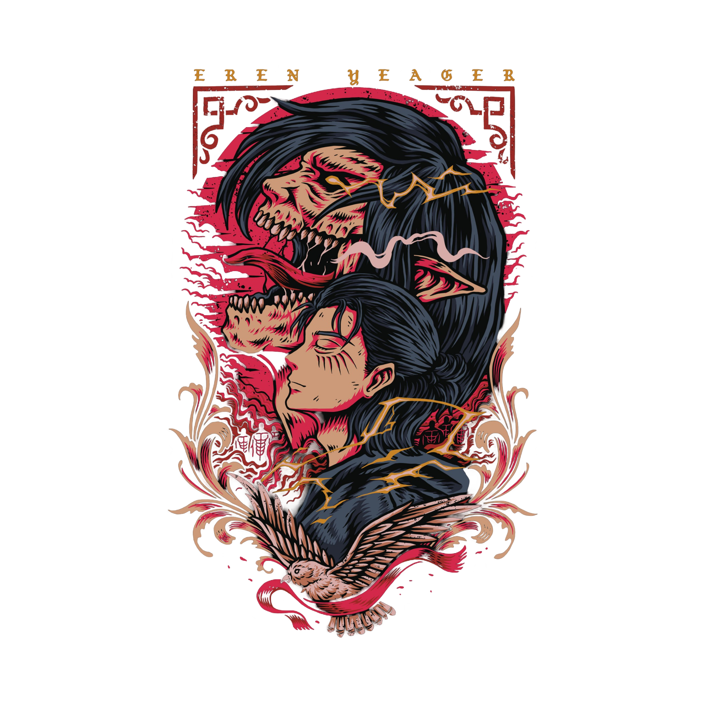

Attack on Titan
Attack on Titan (Shingeki no Kyojin)! É uma série de anime baseada no mangá de mesmo nome criado por Hajime Isayama. O anime começou a ser transmitido em 2013 e rapidamente se tornou um dos animes mais populares e influentes da sua geração. A história se passa em um mundo onde a humanidade vive cercada por enormes muralhas para se proteger de gigantes (os Titãs), criaturas monstruosas que devoram humanos. A trama segue Eren Yeager, sua irmã adotiva Mikasa Ackerman e seu amigo Armin Arlert enquanto eles se juntam ao exército para combater os Titãs após uma tragédia pessoal. O anime é famoso por seus momentos de tensão, reviravoltas na trama, e pela exploração de temas como liberdade, sacrifício, e a natureza humana. A série tem um desenvolvimento muito complexo, especialmente conforme a história avança e mais mistérios sobre os Titãs e o mundo são revelados. A animação é de altíssima qualidade, com sequências de ação impressionantes e um trabalho de direção muito elogiado. Se você curte um anime com muita ação, drama e mistério, Attack on Titan é uma excelente escolha!